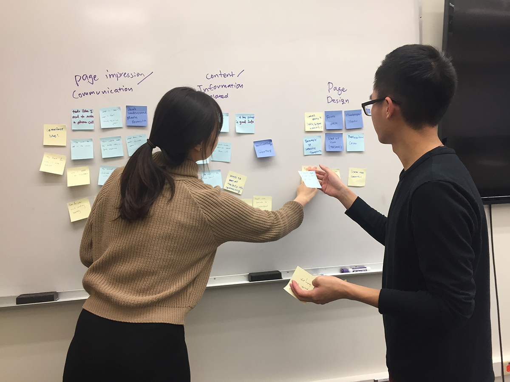
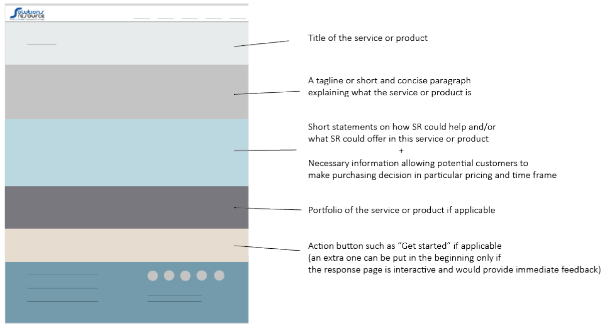

Solutions Resource is a Seattle software consulting startup. I was hired as one of the UX/UI Designers for summer 2016, working with the design and engineering team to deliver solutions for clients and internal needs.
For this project, I was tasked with redesigning the current website of Solutions Resource, so to attract more clients through online space.
I conducted thorough website heuristic review, remote usability testing, and proposed design changes to senior leadership through wireframes and mockups.
Usability Researcher
Designed and conducted remote usability testing with 3 participants
UX/UI designer
Created wireframes, mockups in a team of 2
Technical Writer
Generated design report and proposed to senior leadership
Started with a brief website review, I along with my team identified potential problems of the website:
1. High Bounce Rate potentially due to poor content
2. Lack of clear overall information architecture
After discussing with the CEO and setting project goals, we decided on the following approach to explore and address above problems:
1. Heuristic evaluation identifying potential problems
2. Usability testing with past clients to validate and further identify website issues
3. Report findings and design changes with wireframes and mockups
We identified the following potential problems:
1. Clarity
The small, colorful menu icons made the homepage visually busy and did not communicate what each title was - "What We Do" and "What We Got" even had the same icon. Additionally, since the audience of this website wouldn't be familiar with programming languages and platforms, the contents of the bottom section weren't clear since there weren't any labels or descriptions.
2. Not selling the service
Many pages in the website did not sell the service of the company. For example, the following page mainly displayed knowledge of web design, instead of how Solutions Resource can help you design your website.
To validate and further explore the problems of the website, we turned to our users. To suit their schedule, we chose to conduct the test remotely using Google Hangout. We then analyzed the gathered data via affinity diagram.
1. Unclear Homepage
Participants were confused what the company did because the website used unclear language and only introduced about their service in a secondary menu bar.
2. Technical Jargon
The website included technical jargon (e.g. high caliber) that participants reported to be confusing - the audiences of the website were not technical.
3. Lack of Key Content
Participants reported that they would not purchase the company's service from the website, because the website lacked key content such as pricing, time frame of the project, etc.
Drawing from the research insights, we identified the web redesign objectives:
1. New homepage need to clearly communicate what the company does
2. All web elements need to serve the purpose of selling the company's service
3. Improve overall visual elements
After rounds of brainstorming and sketching, we produced wireframes of the new homepage design. We then presented them to the CEO to solicit feedback. Below are 2 sample wireframes:
Integrating CEO's feedback, we generated a high fidelity mockup of the homepage. We also generated a visual template for subpages content, helping the marketing team to generate convincing wording to sell the company's service.
From this project, I learned to understand stakeholders' needs and integrated their business goals into my design. I also learned to be flexible in my usability testing, and use the cheapest way possible to get insights out of our users. If I had more time for this project, I would conduct another round of testing on the wireframes and iterate based on the testing insights.